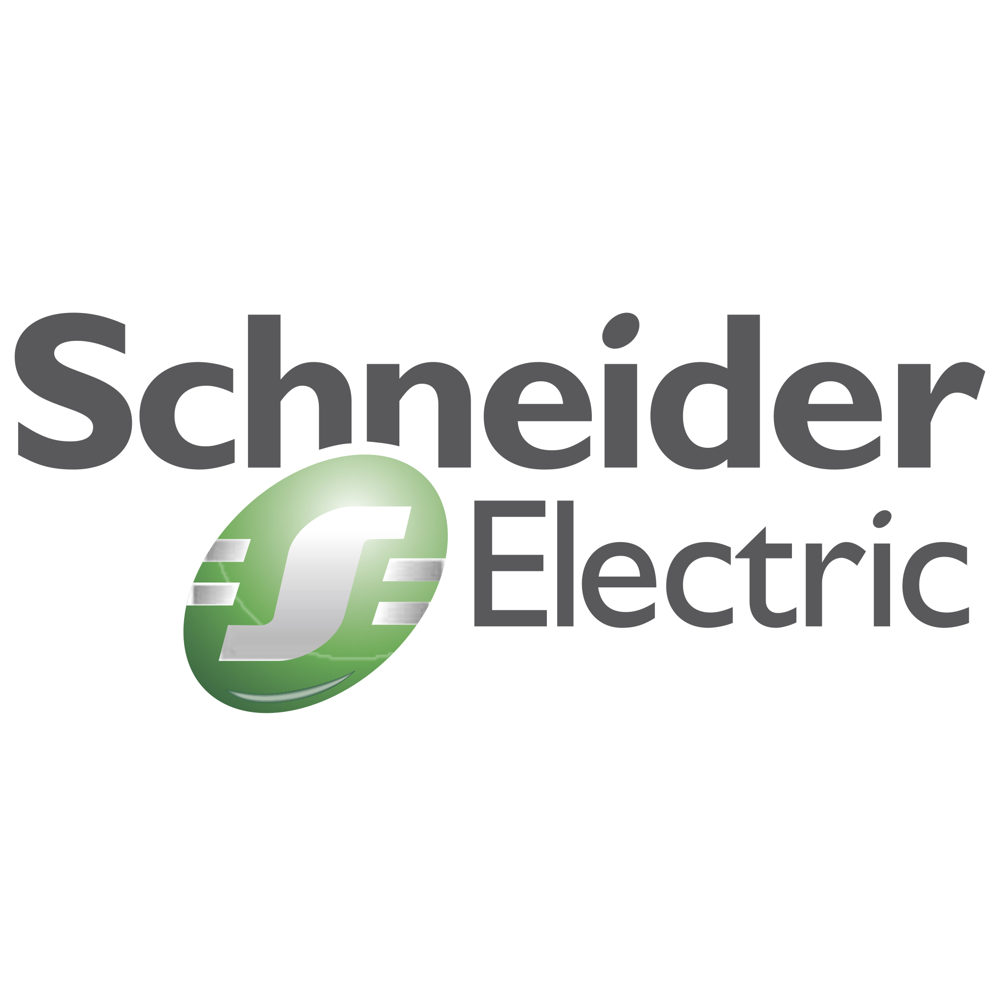
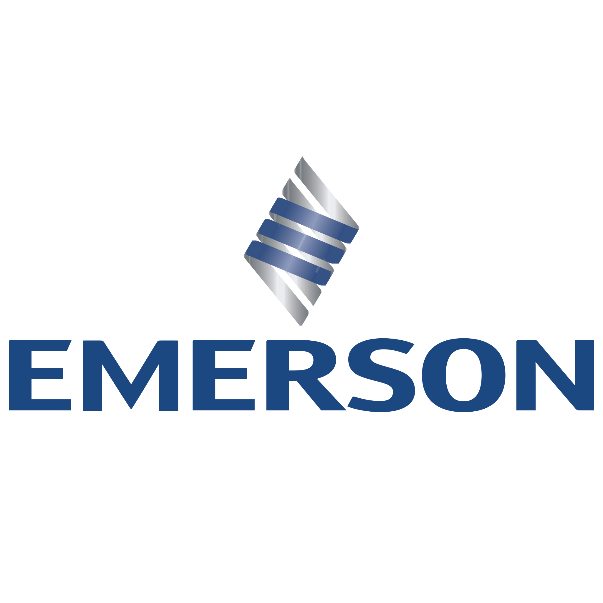
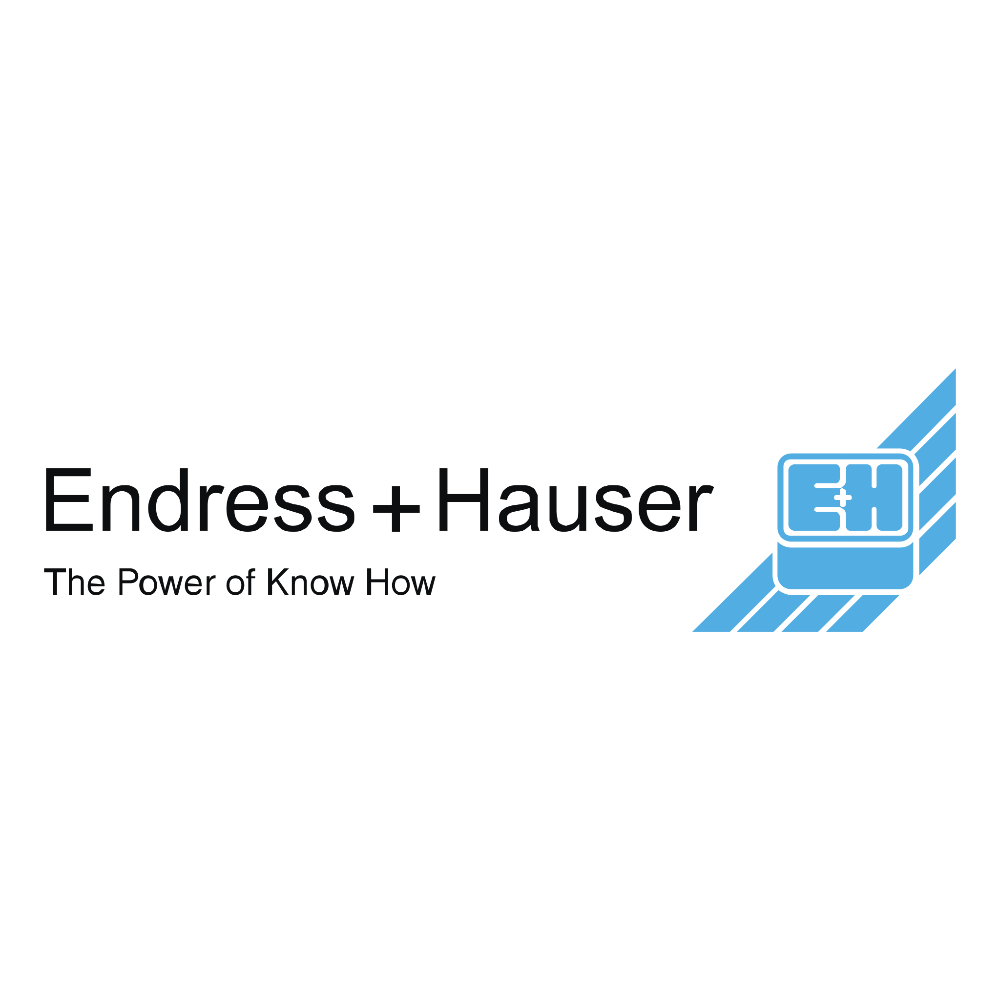

تامینکننده تجهیزات صنایع سیمان در ایران
پیشرو تجهیز فرتاک بهعنوان تامینکننده تجهیزات صنایع سیمان، اقلام کوره، آسیاب و خنککننده کلینکر را با مقاومت به سایش و دمای بالا و مستندات کامل تامین میکند. تجربه ما در این صنعت، مبنای انتخاب تجهیزات با عمر مفید بالا و توقف کمتر است.
تجهیزات صنایع سیمان قابل تامین
تجهیزات فرایند تولید
- کوره دوار: پوسته، نسوز و Burner
- آسیاب سیمان و مواد: گلوله، دیافراگم و زره
- خنککننده کلینکر: Grate Cooler و قطعات
- پریهیتر و سیکلون: اجزای پیشگرمایش
یوتیلیتی و انتقال
- فن و بلوور: فنهای کوره و آسیاب
- الواتور و کانوایر: انتقال مواد
- فیلتر و غبارگیر: Bag House و Electrostatic
برق و ابزار دقیق
- درایو و اتوماسیون: VFD و PLC
- ابزار دقیق: ترانسمیتر و سنسور
- تابلو و کلید: توزیع و حفاظت
برندهای قابل سورسینگ




چرا پیشرو تجهیز فرتاک؟
- مقاومت به سایش و دما: انتخاب متریال مناسب شرایط کوره و آسیاب.
- تامین قطعات یدکی: کاهش توقف خط تولید.
- برندهای معتبر: انطباق با Vendor List کارخانه.
- تحویل زمانبندیشده: هماهنگ با برنامه تعمیرات.
صنایع تحت پوشش
سیمان خاکستری
کوره و آسیاب
سیمان سفید
فرایند خاص
آهک و گچ
کوره و تجهیزات
بتن آماده
تجهیزات انتقال
جدول الزامات تجهیزات کارخانه سیمان بر اساس واحد
مهمترین دشمن تجهیزات در کارخانهٔ سیمان، ذرات سایندهٔ سیلیس و کلینکر است که هم بهصورت سایش مکانیکی و هم با نفوذ به آببندها عمل میکند. جدول الزامات بر اساس واحد:
| واحد | تجهیز کلیدی | عامل تخریب | الزام طراحی |
|---|---|---|---|
| سنگشکن و آسیاب مواد | فنهای پروسس، پمپ هیدرولیک | گرد و غبار بسیار سنگین، سایش | پروانه با لایه Hardfacing، آببند لابیرنتی |
| پریهیتر و کورهٔ دوار | فن ID/Kiln، گیربکس صنعتی، یاتاقان | دما و بار بالا، لرزش مداوم | روانکاری روغنی، سیستم خنککاری، مانیتورینگ ارتعاش |
| خنککنندهٔ کلینکر (Grate Cooler) | فنهای خنککننده، شیرآلات دما بالا | کلینکر داغ، بار حرارتی متغیر | متالورژی چدن یا آلیاژ دما بالا، فونداسیون سنگین |
| آسیاب سیمان | الکتروموتور MV، درایو (VFD) | راهاندازی سیکلی، گشتاور بالا | درایو با Vector Control، کابل مخصوص VFD |
| سیلو و بارگیرخانه | فیلتر بگهاوس، شیر دیورتر، اسکروکانوایر | سایش، تمیزکاری هوای فشرده | لاینر ضد سایش، Actuator با گشتاور کافی |
نکته فنی: گیربکسهای کوره و آسیاب سیمان باید روغن معدنی Industrial Gear با گرانروی مناسب (معمولاً ISO VG 220–460) و سیستم فیلتراسیون مستقل داشته باشند؛ بیش از نیمی از خرابیهای زودرس گیربکس به آلودگی روغن برمیگردد.
راهنمای تامین فن، درایو و کابل برای کارخانهٔ سیمان
در سیمان، فن و درایو قلب مصرف انرژیاند (تا ۶۰٪ برق کارخانه). انتخاب نادرست، هم عمر تجهیز و هم هزینهٔ انرژی را بالا میبرد:
- فنهای سانتریفیوژ: کلاس روتور بر اساس دما و سایش انتخاب شود؛ پروانه با پوشش Tungsten Carbide یا Hardox برای مسیر گاز غبارآلود.
- الکتروموتور: راندمان IE3/IE4 برای کاهش مصرف، کلاس عایق F با温升 B، درجه حفاظت IP55 به بالا. در محیط بیرون، سایبان و هیتر ضد میعان.
- VFD و Soft Starter: برای فنهای بزرگ، VFD با دیود چاپر یا AFE متناسب با طول کابل؛ چوک ورودی و خروجی برای کنترل هارمونیک و امواج ضربهای روی عایق موتور.
- کابل VFD: کابلهای XLPE با شیلد مسی دوگانه (مثل VFD cable XLPE) برای جلوگیری از تخلیهٔ جزئی و آسیب عایق موتور.
- اتوماسیون و ابزار دقیق: سنسورهای ارتعاش و دما روی یاتاقان گیربکس و موتور مسیر بحرانیترین پایش پیشگویانه (PdM) است.
در RFQ فن و درایو قید کنید: دبی و فشار استاتیک نقطهٔ کار، دمای گاز، غلظت غبار، ارتفاع از سطح دریا (تاثیر بر دانسیته هوا)، و اینکه موتور برای VFD آماده باشد.
راهنماهای مرتبط
پرسشهای متداول
تامینکننده تجهیزات صنایع سیمان چه اقلامی را پوشش میدهد؟
کوره دوار، آسیاب، خنککننده کلینکر، فیلتر، فن، تجهیزات انتقال و قطعات یدکی کارخانه سیمان.
آیا تجهیزات مقاوم به سایش تامین میشود؟
بله، زره آسیاب، گلوله و قطعات مقاوم به سایش با متریال مناسب تامین میشوند.
آیا قطعات یدکی کوره دوار تامین میشود؟
بله، نسوز، Burner و قطعات یدکی کوره دوار مطابق مشخصات فنی تامین میشود.
مستندات تجهیزات سیمان چگونه است؟
MTC، گواهی تست و در صورت نیاز بازرسی TPI همراه هر محموله تحویل داده میشود.
استعلام تجهیزات صنایع سیمان
فهرست اقلام یا مشخصات فنی تجهیزات را ثبت کنید تا تیم مهندسی ما پیشنهاد فنی ارائه دهد.
ثبت استعلام هوشمند (RFQ) ←